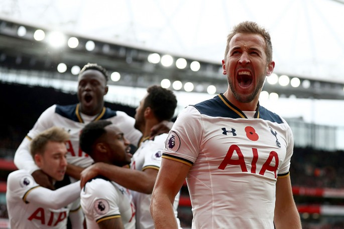
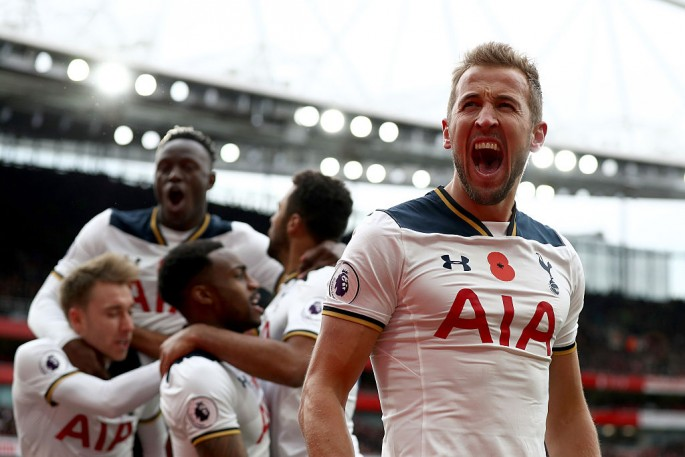
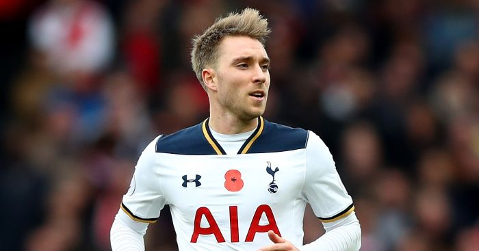
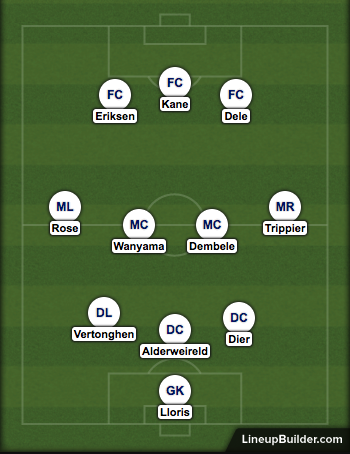

Tottenham Hotspur Season Review 2017/18
After two successive seasons in the top four, can Spurs go on to win the League?

After two successive seasons in the top four, can Spurs go on to win the League?
Tottenham were, arguably, the best team in the Premier League in terms of the football they played, scoring the most goals, conceding the fewest and becoming the only side to have three players -Harry Kane, Dele Alli and Heung-Min Son- to score over 20 goals in all competitions. However, they finished the season empty-handed. Mauricio Pochettino’s men started the season extremely well and embarked on a 12-game unbeaten streak that took them to the top of the table, past 100% Manchester City after ten games. However, a run of four consecutive draws and a defeat to Chelsea, all without Kane, saw them drop out of the top four.
A loss to Manchester United followed, but Spurs them endured a brilliant run of form that saw them win 19 of the remaining 23 games of the season, losing only to Liverpool and West Ham. They pushed Chelsea almost to the wire and kept the title race alive, but they fell short once more. In the cups, Spurs enjoyed a run to the FA Cup semi-final, but lost 4-2 to champions Chelsea at this season’s home, Wembley, but were dumped out of the EFL Cup in the fourth round. Continentally, their Champions League campaign was a disaster, with Spurs finishing third in the group and suffering a humiliating Europa League exit to Gent in the Round of 32.
This is a player who is given far less credit than he deserves in terms of his work-rate, assists, energy, track back ability and dangerous pin-point crossing to mention but a few.
There’s actually a number of players that all make a case for Spurs’ most important player, but in my opinion it’s Christian Eriksen. Spurs coped well without Harry Kane whilst he was injured, with Alli and Son stepping up to the goal-scoring mantle, whilst Jan Vertonghen deputised in Toby Alderweireld’s absence. Without Eriksen, though, the team cannot function. The Dane is so important to team coherency that’s imperative he stays fit. He’s the midfield metronome that helps Tottenham tick, providing a club-high number of assists (15) and creating the most chances in the Premier League (111). When Eriksen plays well, the entire side raise the game, such is his importance. All play flows through him and when on form, he’s one of the best playmakers in the world.
Chelsea may have won the title, but man-for-man, Spurs have the better starting XI, of that there’s no doubt. The reason the Blues won the league, therefore, is because of their superior squad depth, able to rotate players with ease without sacrificing first team quality.
Spurs will begin the season in a weaker position than when they ended the previous campaign. They’ve lost Kyle Walker, Trippier is injured and by Pochettino’s own admission, Kyle Walker-Peters isn’t ready for the first XI. Squad depth harmed Spurs last season and categorically will do so again as it’s an issue Pochettino and Levy have not yet addressed. They need quantity to replace first teamers without losing any quality. A hard ask, but not impossible. It’s the only weakness Spurs have.
The brilliance of Spurs’ current personnel is that they’re versatile enough to work effectively in a variety of tactical systems.
Last year’s XI is still the strongest, given Spurs haven’t actually added any new faces as of yet. The only difference is Trippier comes in for Man City-bound Walker. Spurs were at their best with a three-man defence and Victor Wanyama the defensive midfielder coming deep to provide the fourth defensive option. It allowed the wing backs (Danny Rose and Trippier) to maraud forwards and get involved offensively, whilst it put Dele Alli and Christian Eriksen more central and closer to Harry Kane, where all three can influence proceedings in and around the box.
It’s hard to measure success with Spurs given the fact they’re playing out of their regular home for the season. Superficially, the club will project another top four finish as successful, citing their lack of financial might as a hinderance against the other Premier League clubs. However, from a fan’s perspective, silverware is the order of the day. It’s important to capture a trophy to keep the promising group of players together and create some sort of legacy.
It’s unrealistic to suggest Spurs will win the Premier League, though it does remain an outside possibility. A top four finish, an extended run in the Champions League, plus the Carabao or FA Cup and most fans would be content heading into the new stadium.
Hunter have predicted that Spurs will finish in the top four, but just about in fourth place. The lack of squad depth will prove influential come the midway point of the season, whilst it remains to be seen whether Spurs will struggle at Wembley. The Manchester clubs have gotten stronger, whilst Spurs have arguably got weaker collectively. It doesn’t look too promising, but hopefully a cup competition can provide some glory.